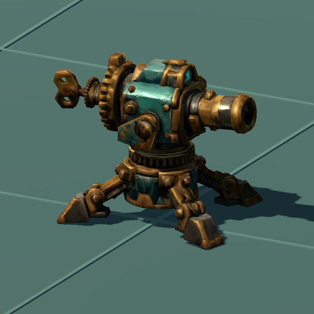
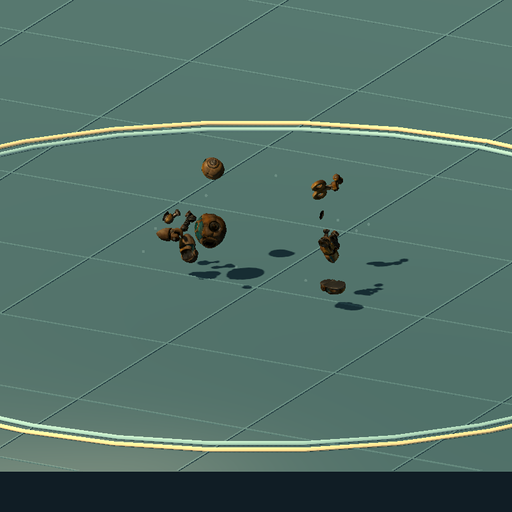
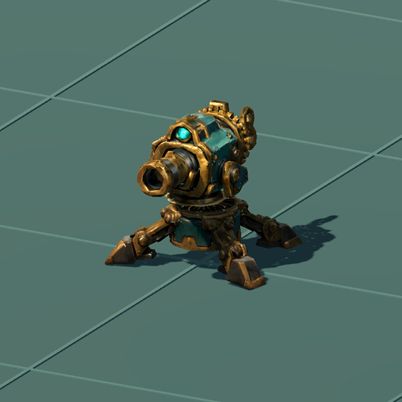
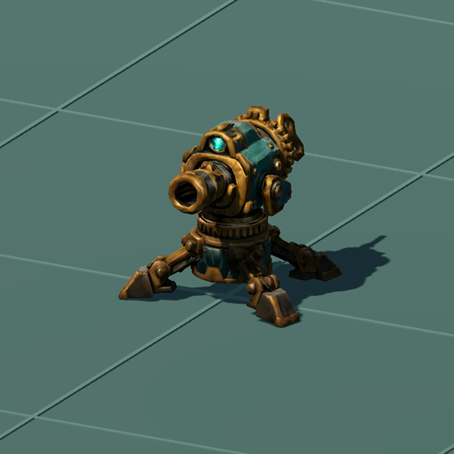

WITCH · SUMMONS · V2
부품이 풀려 무너지고, 자폭하면 흩어집니다
사용자가 나눈 Tripo 파트로 교체했습니다. 포탑은 받침을 고정한 채 상부와 구동부가 단단하게 회전합니다. 일반 파괴는 아래로 무너지고, 태엽인형의 수명 종료 자폭은 섬광과 함께 부품이 바깥으로 튑니다.

포탑 · 받침 고정 / 회전대·포신·톱니·태엽 분리
태엽인형 · 몸통·머리·팔다리·태엽의 독립 비산동작과 실제 표시 크기
포탑 파괴 전후

이전 · 하나로 붙은 몸체가 앞으로 넘어짐
수정 · 조준 자세에서 이어져 부품이 따로 내려앉음아래 비교는 두 동작을 같은 시간으로 반복합니다. 위에서 ‘수정: 부품 붕괴’를 고르면 프레임별로 멈춰 확인할 수 있습니다.
게임 연결
일반 파괴와 수명 종료 자폭을 구분하며, 자폭 피해와 범위는 기존 값을 유지합니다. 파괴된 소환물은 즉시 목표·충돌에서 빠지고 잔해만 잠시 남습니다. 일시정지하면 잔해도 멈추고, 필드 초기화 때 모두 정리됩니다.
| 종류 | 독립 부품 | 삼각형 | 재질 |
|---|
| 태엽인형 | 13 | 9,791 | 1개 · 1K PBR |
| 자동포탑 | 86 | 17,556 | 1개 · 1K PBR |
원본 12개로 나뉜 인형에서 한 파트에 같이 묶였던 좌우 다리 축만 추가 분리했습니다. 포탑의 작은 테두리와 톱니를 남기기 위해 이전 통합면보다 삼각형 예산을 늘렸습니다. 파트별 재질을 아틀라스로 합쳐 소환물마다 한 재질로 그립니다.
실제 게임 자산으로 촬영한 검토본입니다. 중력·바닥 튕김을 미리 구운 연출이며, 잔해끼리나 벽과의 실시간 충돌은 포함하지 않습니다. 부품 안쪽과 일부 금속 테두리는 확대 시 거칠 수 있습니다.
모든 삼각형의 단일 강체 연결, 360도 조준, 실제 파괴/자폭 분기와 피해·범위·시작 자세·정리 동작을 검사했습니다. 기존 전투·적 종류·보스·기본 실행 회귀도 통과했습니다.